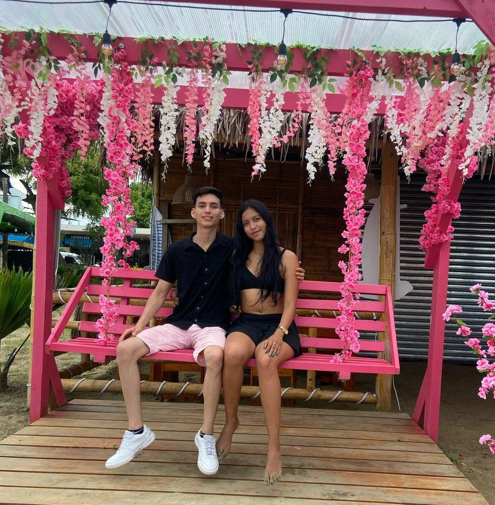

De click al corazón!
Hoy cumplimos nuestro primer mes de novios, y aunque pueda parecer poco tiempo creame que ha sido suficiente para darme cuenta de lo increíblemente especial que usted es para mí.
Desde el primer día que la ví en la U, usted llegó a mi vida a llenarla de felicidad, de sonrisas y de un cariño que no sabía que necesitaba tanto. 💖
Cada momento que hemos vivido juntos se ha convertido en un recuerdo precioso que llevaré conmigo siempre.
Me encanta la forma en la que iluminas todo a su alrededor con su sonrisita, la dulzura en su voz y la paz que siento cuando estoy con usted.
Eres mi persona favorita, mi lugar seguro, mi alegría diaria y la razón por la que mis días son más bonitos ya que al despertar cada mañana y recibir un mensaje suyo me motiva a tener un buen día.
No hay palabras suficientes para describir lo feliz que me hace tener a la novia más hermosa del universo.
Quisiera poder abrazarla muy fuerte en este momento y decirte en persona todo lo que significas para mí,
pero me quedo con la tranquilidad de que pronto lo haré, porque esto es solo el comienzo de algo hermoso que estamos construyendo.
Quiero seguir sumando meses, momentos y recuerdos con la niña de mis sueños, porque cada instante a su lado
me confirma que es el lugar donde siempre quiero estar y que no me quiero ir de ahí nunca.
Gracias por ser usted. Por cada sonrisa, por cada palabra bonita,
por ser la persona con la que quiero compartir mi tiempo. No sabes cuánto valoro tenerla en mi vida,
y solo espero poder hacerla tan feliz como usted me hace a mí. 💕

Con todo mi amor,
Diego ❤️